2024-et írunk. Az Artemis-program keretében a játékos feladata, hogy a Csillaghajóval épségben leszálljon a Hold felszínén. A leszállást megnehezíti, hogy a sebesség mellett, arra is kell figyelni, hogy bekapcsolt hajtóművel nem szabad túl közel lenni a leszállóhelyhez. Ettől függetlenül nem kell aggódnunk, hiszen a felhasználót a műszerfalon kijelzett adatok segítik a feladatában. A játékban található egy ranglista is, mely rögzíti a legjobb öt pilóta nevét és leszállási idejét.
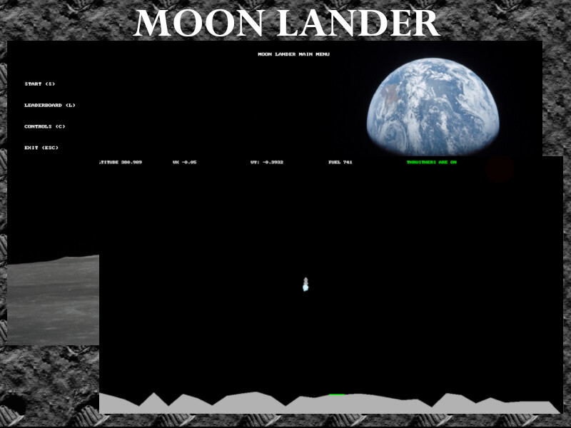Játékom a mindenki által jól ismert kígyós játék alapján készült az SDL2 multimédiás könyvtár felhasználásával. A már ismert játékmenetet különböző képességeket adó almákkal és a játék elején generálódó falakkal próbáltam újragondolni. Az almák megevéskor lassíthatják, gyorsíthatják a kígyót, újraéledés lehetőségét kínálhatják a kígyónak, vagy épp eltéríthetik őt egy más irányba. Létezik olyan alma is, mely nem létező falak hallucinálását, és a háttér élénk szinű villódzását idézi elő. A menüben képarányt, képméretet, játéknehézséget és játékosszámot lehet választani.
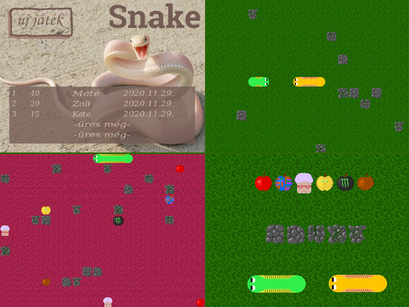A program egy "Toronyvédő", vagy "Tower Defense" típusú játék. Minden kör elején tornyokat kell megvásárolni és lerakni úgy, hogy az a kijelölt útvonalakon érkező ellenségeket a lehető leghatékonyabban elpusztítsa. A cél, hogy minél több kört teljesítsünk anélkül, hogy túl sok ellenség átjutna a pályán. Minél tovább sikerül ez, annál több pontunk lesz, így a teljesítményünket egy pontverseny keretein belül össze tudjuk mérni másokéval.
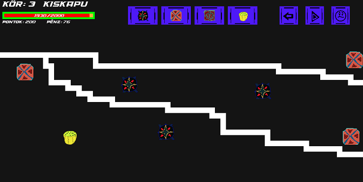Házinak egy 'low budget' pacman játékot készítettem. A játék célja, hogy pacman megegye az összes kis pontocskát a pályán, miközben a szellemeket elkerüli. Viszont a szellemek, eredeti logikájuk alapján, nagyon szeretnék elkapni pacmant. A nagyobb méretű pontok megevésével azonban a játékos kap rövid időre lehetőséget, hogy megkergesse a szellemeket, ezzel rengeteg pontot bezsebelve annak reményében, hogy a játék végeztével felkerülhet a dicsőséglistára.
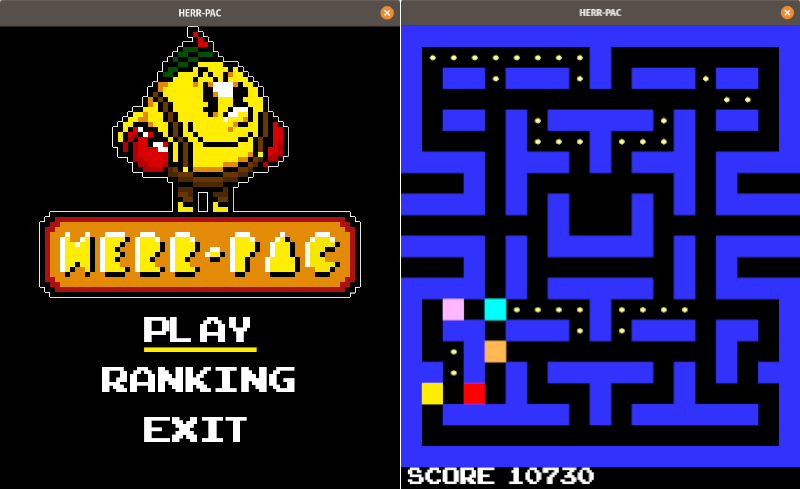Az én programomnak a Conway-féle Game of Life adott ötletet. A felhasználó képes az egér segítségével a cellák állapotát megváltoztatni, a pályát átméretezni, egy előre megadott pályát betölteni, illetve a játék gyorsaságát növelni/csökkenteni. A felhasználónak ugyanúgy lehetősége van különböző gyorsbillentyűzeteket használnia, hogy gördülékenyebben menjen a használata.
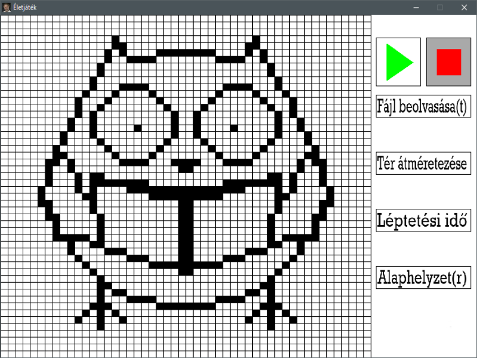Programom a talán sokak által ismert kígyós játékot valósítja meg. A játék tartalmaz egy- és kétjátékos módokat, illetve egy ranglistát, ahova az egyjátékos módban 10 legjobb pontot elérő játékos kerül fel. Egyjátékos módban a cél a minél nagyobb hossz és ezáltal nagyobb pontszám elérése. Kétjátékos módban az nyer, aki tovább élte túl, ha egyszerre estek ki akkor a hosszabb kígyóé a győzelem. Hogy feldobjam a játékot vizuálisan, saját pixel artot csináltam hozzá.
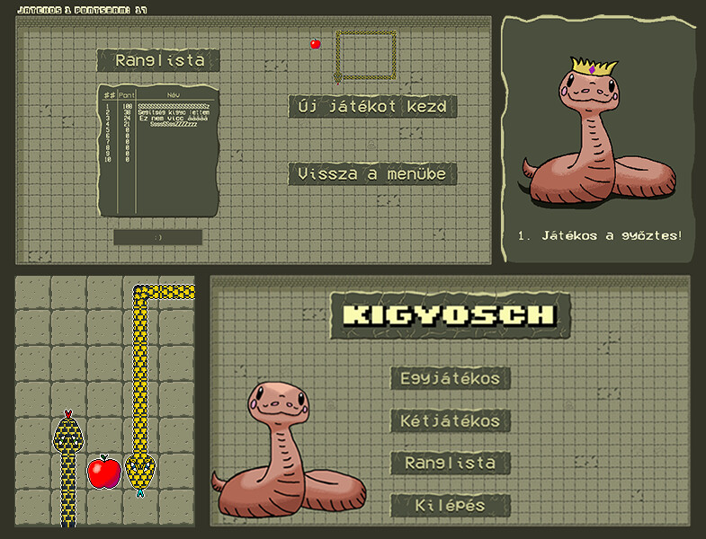A távoli jövőben az emberiségnek nincs semmi gondja, ugyanis a fejlett algoritmusok megoldják a legtöbb problémát. Ezen örök béke a matematika és technológia fejlődésén keresztül érvényesül. Ezt a haladást segíti elő a terminál, aminél a legjobb és legintelligensebb algoritmus képes a matematika erejével elsöpörni az ellenfeleit. Ezek az algoritmusok így bizonyítják, hogy biztonságosak és gyorsak. VIK mérnök hallgatói véletlen telepítettek egy nagyon gyorsan tanuló MI-t, ami átvette az irányítást így kockáztatja a világ biztonságát, és csak úgy lehet meghódítani uralmát, ha egy erősebb algoritmust képes az emberiség fejleszteni. A program a szimulációs terminál, ahol az algoritmusok (emberek) egymással játszanak, az nyer akinek több élete marad a 100. kör végén is.
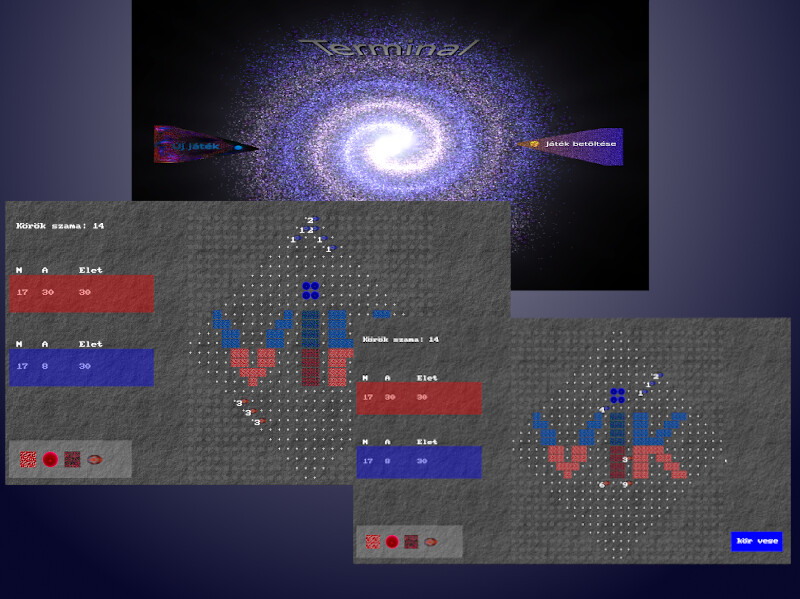A program az eredeti játék Covid-kiadása. PacMan-ünknek minél több vitamint kell összegyűjtenie úgy, hogy közben nem fertőzi meg egyik vírus sem. Ha azonban a pályán található valamelyik maszkot felvesszük, teljes védelmet kapunk a kórokozókkal szemben. A játékterületen időnként feltűnik a vakcina, amelyet ha megszerzünk, pluszpontok mellett körünk véget ér, már nem fenyeget minket többé a vírus. Készíthetünk saját pályát igényeink szerint, emellett a szörnyek és életeink számát is meghatározhatjuk.
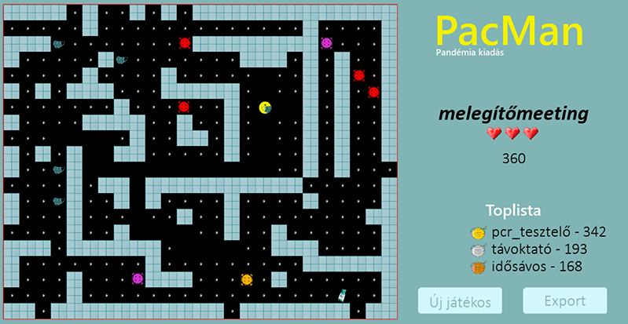A játék egy klasszikus sakk program, ami SDL-ben készült. Két játékos játszhat egymás ellen a már megszokott szabályok mellett. Lehetőség van a játékállás mentésére, hogy egy megkezdett partit ne kelljen az idő hiánya miatt végleg félbeszakítani.Továbbá korábbi játékok is visszanézhetőek, így egyszerűen tanulhat a felhasználó korábbi hibáiból. A forráskód a következő linken érhető el: https://github.com/zimavagyok/nhfsakk.
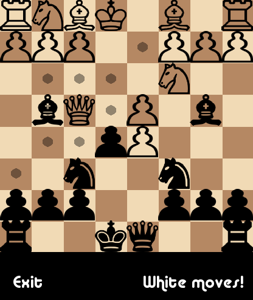A program a Conway-féle életjáték szimulációt valósítja meg SDL grafika segítségével. A kezdőállapotot egérrel "rajzolva" adhatjuk meg, vagy betölthetünk már mentett állapotot fájlból is. A pályát át lehet méretezni annak teljes törlődése nélkül. A szimuláció indítás után folyamatosan fut, amit meg lehet állítani, illetve újra lehet indítani. Az aktuális állapotot a pálya méretével együtt egyedi fájlnévvel el lehet menteni. A pálya törlése is lehetséges.
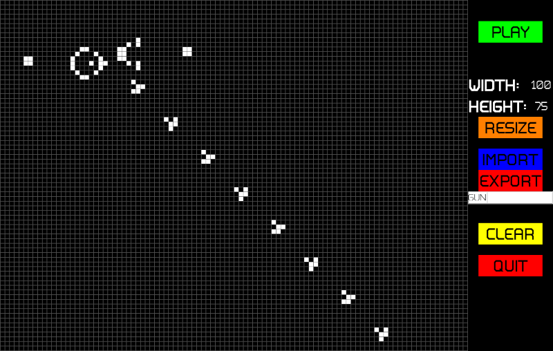Vagy olyan ügyes, hogy elérd a kettő 11-edik hatványát? Ehhez legalább 1023 összevonást kell végezz, mindössze 16 kiskockán. Jól használd ki a helyet, mert kevés van! Próbálkozz többször is, nyugodtan! Kezdd újra, ha úgy érzed! De egy dolgot jegyezz meg: a szarvasok csak 2048-at esznek. Ne hagyd sokáig éhezni őket!
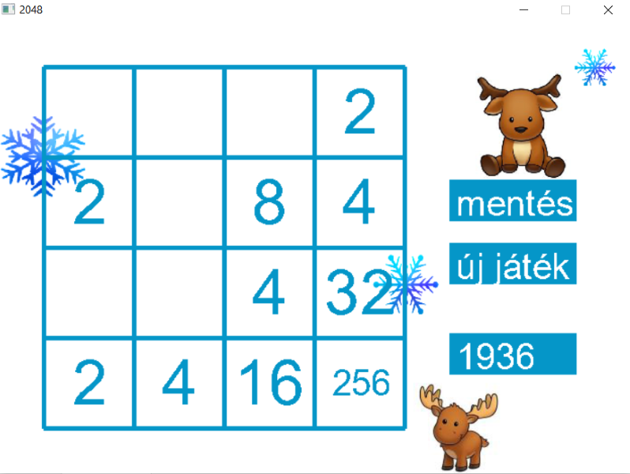A híres snake játékot készítettem el a megszokott szabályokkal, de kibővítve kétjátékos móddal. Minden megevett almával növekszik a kígyó hossza. Egyjátékos módban a lehető legtöbb pontot kell összegyűjtenünk, kétjátékos módban pedig le kell győznünk a másik játékost. Egyjátékos módban elmenthetjük az elért pontszámunkat, a legjobb 10 eredményt meg is nézhetjük a ranglistán.
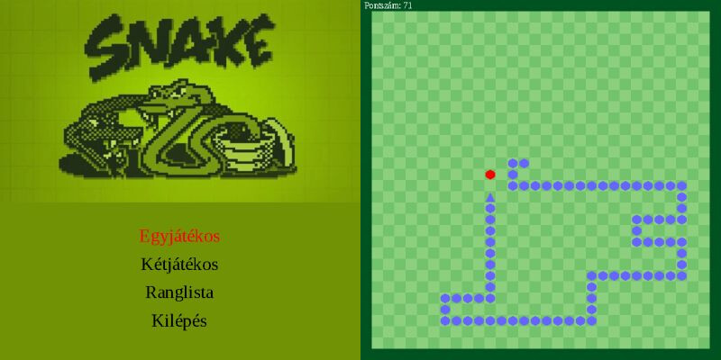Én a mindenki által ismert Snake játékot készítettem el, egy kis rózsaszín csavarral. Egy-, illetve többjátékos módban is lehet játszani, de a cél mindig ugyanaz, hogy minél több pontot szerezzünk. Minden mochi megevésével nő a kígyó, ezáltal egyre nehezedik a játék. Az eredményeket a dicsőségtáblában nézhetjük meg, pontok szerint rangsorolva. A játék egyediségét garantálja, hogy minden egyes képet én rajzoltam. 🥰
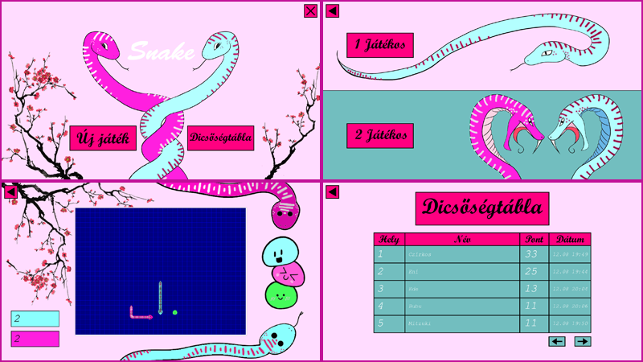Az általam készített játékban az a feladatod, hogy megtaláld a legrövidebb utat a rajt és a cél között. A bal felső sarok a rajt, és 20 másodperced van eljutni a célba, ami a jobb alsó sarok. A karakteredet egy "o" karakter jelzi, ezt kell a nyilakkal eljuttatnod a célba, a lehető legrövidebb úton. Ha elértél a célba, a program kiszámolja az ideális útvonalat, és az alapján pontozza a teljesítményed, hogy a te útvonalad mennyivel volt hosszabb. A játék öt előre elkészített szintet tartalmaz, de te is készíthetsz új pályákat, amiken a program szintén képes megtalálni az ideális útvonalat. A játék valójában a városi tájfutás egy részét egyszerűsíti le és gyakoroltatja, hiszen tájfutóként is az egyik legfontosabb dolog, hogy a lehető legjobb útvonalat válaszd. A játék letölthető GitHub-ról: https://github.com/Tschonti/utvonalvalaszto.
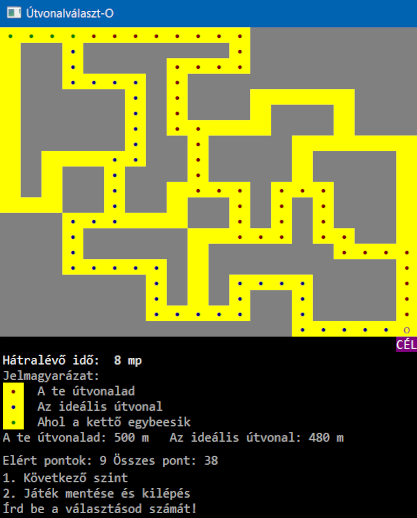Gyakorlatilag egy hagyományos Snake, SDL grafikával megvalósítva. Célunk, hogy a pályán generált ételek elfogyasztásával egyre nagyobbak legyünk. Többjátékos módban lehetőségünk van ebben szabotálni ellenfelünket, ha kikényszerítjük, hogy nekünk ütközzön. A megvalósítás során a letisztult és egységes megjelenítésre törekedtem.
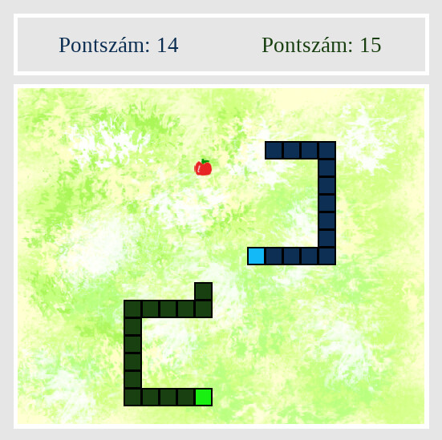Huffman kódolást használó tömörítőt készítettem, amely egy egyszerű parancssor alapú felületen argumentumokkal vezérelve képes fájlokat tömöríteni (és kitömöríteni). A tömörítés hatékonysága nagyban függ a fájlban tárolt adat bájtjainak különbözőségétől, mivel tömörítés során a program a forrásfájl minden bájtjához egy az adott bájt gyakoriságától függő kódot rendel, minél gyakoribb egy bájt, annál rövidebb a kód. Szövegfájlok tömörítésére kiválóan alkalmazható, a mindenki által ismert debugmalloc.h könyvtárat például 18-ról 13kB-ra tömöríti. Beépített tömörítést nem alkalmazó képek esetén is egészen látványos az eredmény, pl. egy fekete-fehér szöveget tartalmazó 280kB-os BMP fájlt kb. 45kB-ra tömörít. Mivel a felhasználói felület minimális, a képernyőképet egy a program működését bemutató ábrával egészítettem ki.
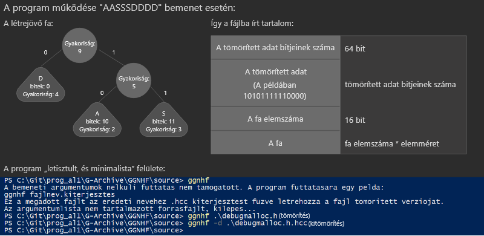Más néven még esetleg othello vagy "átfordítós". A felhasználó és a gép mérkőzik meg egy mással. A felhasználó a fehér téglalap, míg ellenfele az 'X'. A játék célja, hogy a felhasználó átfordítsa az összes ellenséges területet úgy, hogy az ellenség bábuit bezárja egy másik, szintén sajátjával, miközben a gép is ezen lesz.
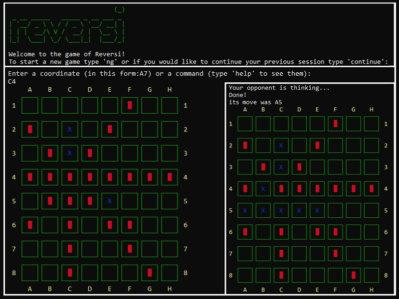A program a jól ismert amőbajátékot valósítja meg SDL grafikával. A játék főmenüjében a betöltés gombbal betölthetünk egy korábbi játékot a windows fájlkezelővel, az új játék gombra kattintva a beállítások menübe jutunk, ahol szabadon lehet állítani a pálya méretét (akár 3x3, vagy 4x4 is), a robot játékos erősségét, valamint a használni kívánt bábut, a megfelelő X, vagy O betűre kattintva. A menü gombjai színt váltanak, ha a kurzort föléjük irányítjuk. A gép három különböző erővel tud játszani, melyek közül a harmadikat nem könnyű megverni, késő esti tesztelések során többször is megvert. Ha bezárjuk a játék ablakát, a megjelenő windows fájlkezelőben elmenthetjük az aktuális játékállásunkat. Amint valaki győz, a pálya átrajzolódik a győztes játékos színére, ha döntetlen, akkor szürkére (az ötlet egy videóból származik). A játék vizsgálja, hogy történhet-e még egyáltalán győzelem, ha nem, akkor a játék kimenetele döntetlen, nem kell telepakolni a pályát lehetetlen helyzetek esetén. A legnagyobb kihívást az AI-hoz való megfelelő súlyozás kitalálása jelentette.
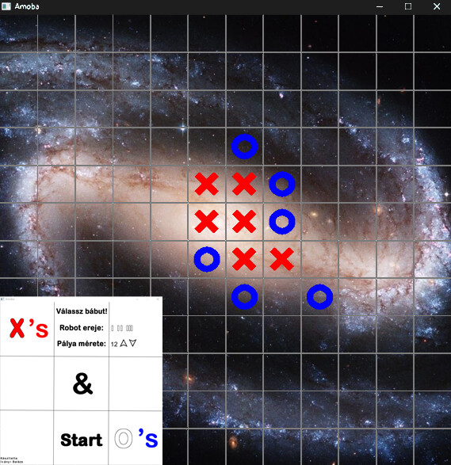A játék célja, hogy Mágnesfej Úr eljusson a három egyedi pálya végére, ám ez nem olyan egyszerű. A pálya veszélyeket tartogat. Ha főhősünket meglátja valamelyik járőröző ellenség, akkor az megpróbálja a túlvilágra küldeni. Ezt elkerülendő játékosunknak két lehetősége van: vagy semlegesíti a veszélyt tőrével, vagy végiglopakodik a helyszínen kihasználva a terep adottságait.
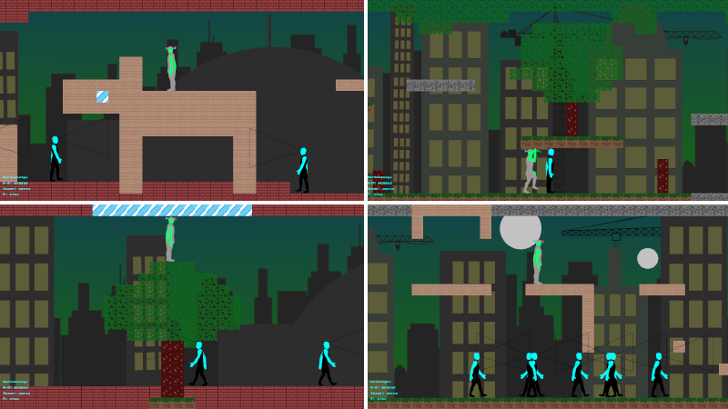A játékos közötti sakkjátszmát bonyolít le. A billentyűzet segítségével tudunk a bábukkal lépni. A program SDL-t használ a játék megjelenítésére. Ellenőrzi a szabályok betartását, és a játék végén kiírja az eredményt. A program elmenti az összes lejátszott játszmát, így akár utólag is visszanézhetjük a korábbi meccseket.
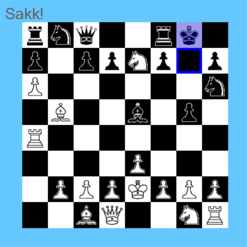Programomban a klasszikus Moon Lander játékot valósítottam meg. A játékos feladata egyszerű: minél kevesebb üzemanyagot elhasználva, megfelelő sebességgel, kikapcsolt hajtóművel végrehajtani a Holdra szállást. Ehhez a pilóta a jobbra-balra-lefele nyilakkal, illetve space billentyűvel változtathatja a hajtómű teljesítményét. Vajon a játékos is kívánhat szerencsét Mr. Gorsky számára, vagy megsemmisül a Hold buckái között?
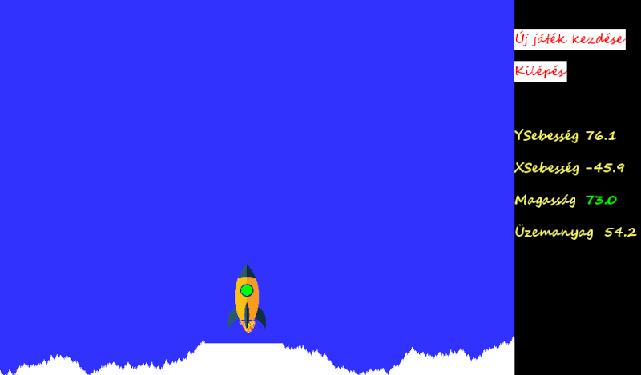Emlékszem, hogy még a gimis fizika tanárom mutatott nekünk egy ehhez hasonló játékot, és nekem az annyira megtetszett, hogy nagy háziként egy ahhoz hasonló játékot valósítottam meg. A játék célja az, hogy a pályán elhelyezett fehér színű negatív töltést a zöld színű célba kell juttatni, közben elkerülve a sárga színű falakat és a pálya széleit. A töltést irányítani a pályán elhelyezhető, tetszőleges számú nagy és kicsi, pozitív és negatív töltéssel lehet. A legkevesebb töltést felhasználó játékosok felkerülnek az adott pálya dicsőséglistájára.
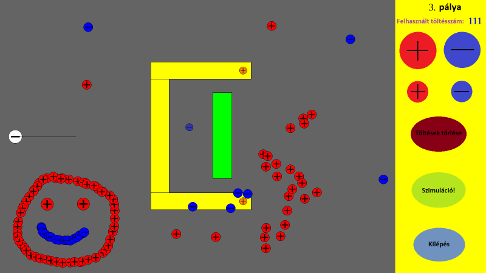A Moon Lander játékprogramban a játékos célja, hogy sikeresen landoljon a kirajzolt holdfelszínen a leszállóegységgel, amelynek gyorsulását szabályozhatja. Az üzemanyag azonban véges: gazdálkodni kell vele a játék során, ebben a műszerfalon megjelenő információk segítenek. Ha a játékosnak sikerül leszállnia a felszín egy egyenes szakaszára úgy, hogy a vízszintes és a függőleges irányú sebessége sem túl nagy, a landolás sikeres.
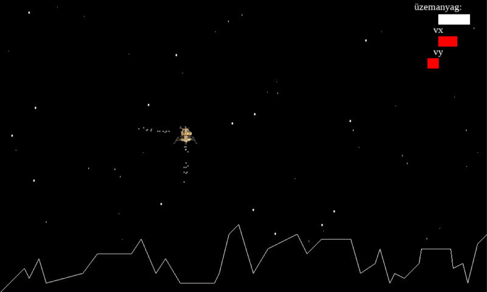A játékom egy hagyományos kétdimenziós platformos ugrálós játék azzal a csavarral, hogy a pályák teljesítéséhez fel kell fedezni "bugokat", és azokat felhasználni a célba jutáshoz. Ilyenek például, hogy a kulcs falon keresztül is felvehető, vagy, hogy amikor meghal a karakter, akkor a megjelenő menü mögött tovább tud mozogni. A játék három pályából áll. A későbbi pályák felnyitásához mindig az előzőt kell teljesíteni. A játékot SDL könyvtárral jelenítem meg. Lehetőség van benne játékállások mentésére és betöltésére.
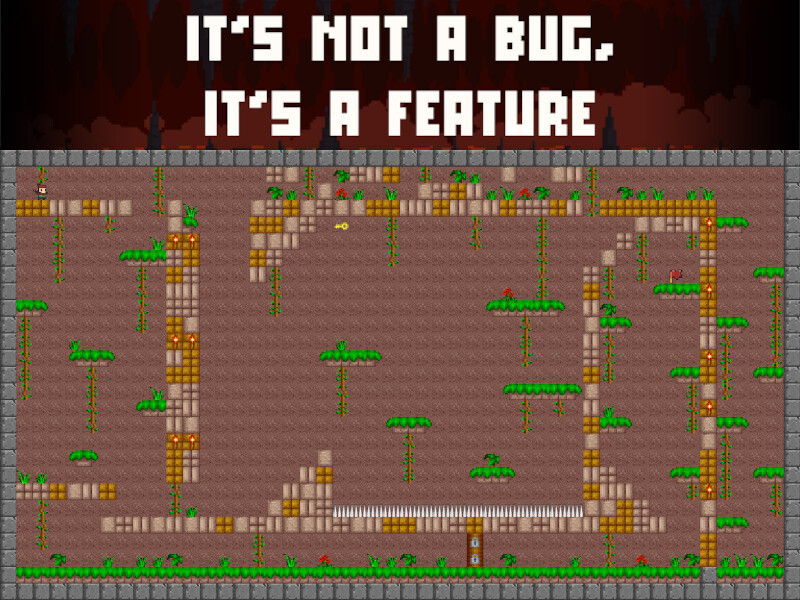A program PPM formátumú képeken végez el különböző műveleteket. Képes a fényesség, kontraszt, élesség módosítására, a kép színtartományának eltolására, a színcsatornák egyenkénti eltolására, valamint a színértékek szinusz függvény alapú torzítására is. A képet lehet tükrözni, a színeit invertálni és fekete-fehér, illetve vörös-cián 3D képpé alakítani. A legfontosabb képessége viszont, a glitch art generálás, amit a pixelsort algoritmus segítségével lehet megvalósítani. Ez, a kép bizonyos tartományaiban a pixeleket színük alapján sorba rendezi. Így egy olyan képet kapunk, ami a részleteket elmossa, és csak a lényeges objektumokat lehet kivenni. A képernyőképen bal oldalon látható az eredeti - @ballibbelkeltem által készített - kép és jobb oldalon egy módosított változat. A kimeneti kép vörös-cián szemüveggel nézve 3D hatású.
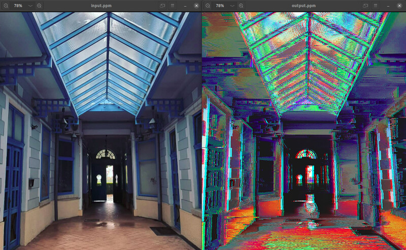A házim egy receptes könyv elkészítése volt. A programom célja, hogy a felhasználó, a grafikus felületen nyilván tudja tartani és meg tudja tekinteni a recepteket, illetve ezt a nyilvántartást módosítani tudja receptek hozzáadásával és törlésével. A program lehetővé teszi az állományban lévő keresést is különböző módokon: név szerint, kategória szerint, egy ("Inspiráció"), illetve több hozzávaló megadásával ("Mi van a hűtőmben?"). Lehetőség van random recept megtekintésére is a "Nincs ötletem" funkció használatával.
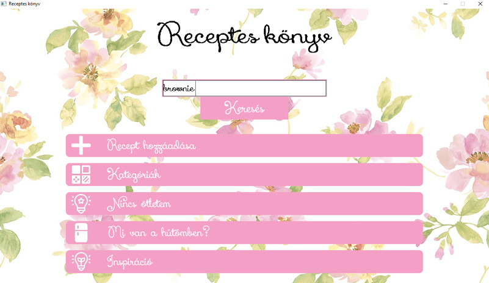A program egy grafikus felületű játékprogram, melyben a középen álló kék karaktert tudjuk irányítani a bal felső sarokba lehelyezett kártyák segítségével. A cél, hogy minden szinten legyőzzük az összes ellenséget, így több pontot szerezzünk a játék végén. A sárga kártyák, mozgásra (vagy kártyahúzásra) használhatóak, míg a kékek védekezésre szolgál és a pirosok pedig támadásra jók. Minden egyes fekete kártya saját speciális képességgel bír, akár a lehelyezésre szolgáló területet is meg tudja növelni. A képen, az éppen védekező kék karakter egy támadást tud kijelölni a körülötte álló piros ellenségekre. A képeket, animációkat magam rajzoltam.
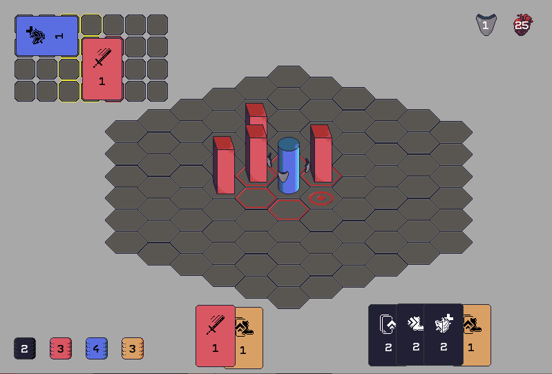A program különböző síkbeli alakzatokat (körök, egyenesek, szakaszok) jelenít meg és tárol el a koordinátarendszerben. Kiszámítja és megjeleníti SVG fájlba írással a kiválasztott alakzatok metszéspontját, adott pontból a körhöz érintőket húz, egyeneshez és szakaszhoz adott pontból merőlegest állít. Szakasz esetében választható opció a felező merőleges számítása is.
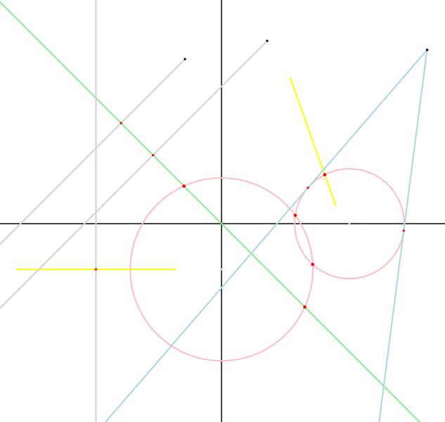Ez a játék, a már jól ismert kígyójáték kicsit modernebb változata. A hagyományos egyjátékos mód mellett (ahol a játékos célja, hogy minél több pontot szerezzen mielőtt a falba fut, vagy magába harap), rendelkezik egy dicsőséglistával, ahol meg lehet néni a legjobbak eredményeit, illetve van benne kétjátékos funkció is, ahol már nem a pont gyűjtése a lényeg, hanem az, hogy kiejtsd a másik játékost.
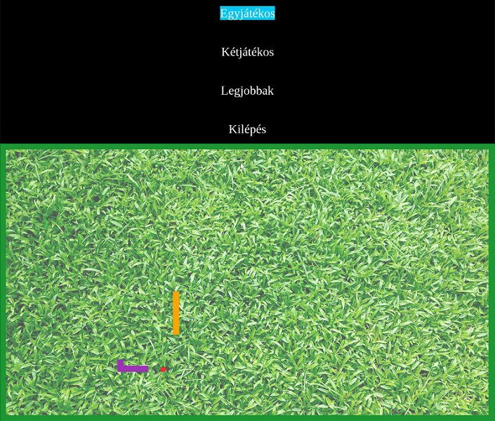A Mark's Pipe Dream egy csőépítős játék, melyben építünk egy olyan csőrendszert, ahol a folyadék a megfelelő csőszámig el tudjon folyni. Az építéseket az egymás után követő szinteken tudjuk megtenni, miközben gyűjtjük a pontokat a jobb eredmény érdekében. A játék folyamán kihívást jelent a folyadék sebessége, a minél gyorsabb és pontosabb csőhálózat megépítése, illetve a többi játékos eredményének a megdöntése. Természetesen szünetet is tudunk tartani bármikor és ha közben egy kis motivációra vágyunk a folytatás érdekében, akkor a statisztikát és a top eredményeket is meg tudjuk tekinteni.
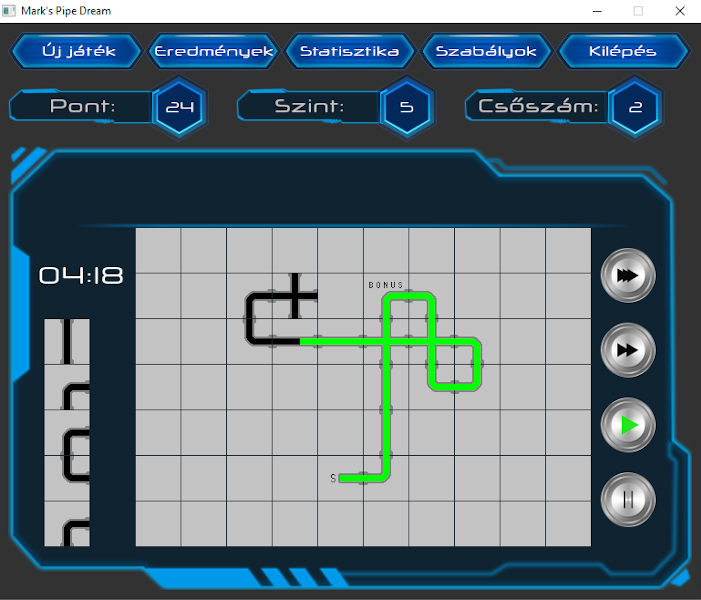A labirintus játék a fejtörős "puzzle" kategóriába sorolható, ahol van egy egyszerű koncepció, és tartozik hozzá egy bonyolult megoldás. A játék célja az átlósan szemközti oldalon lévő zöld cél elérése a mozgatható piros négyzettel a lehető leghamarabb. A nehézséget az okozza, hogy a pálya minden egyes alkalommal random generált. Így a játék minden alkalommal újnak érződik, mivel arra az esély, hogy kétszer ugyanazt a pályát kapjuk, nagyon kicsi. Továbbá lehetőséget kapunk különböző nehézségi szintek közül választani az ízlésünknek megfelelően.
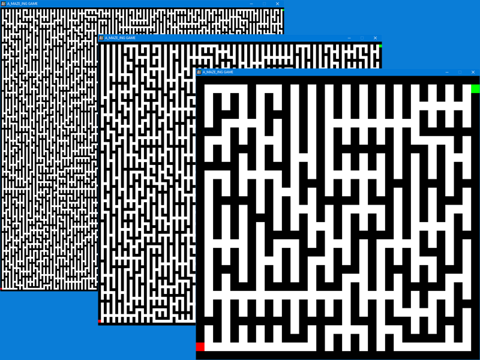Az elkészített programom a híres Akanakereső játék. SDL-es grafikus megjelenítést használtam az elkészítéshez. A program elején lehetőség van játszani, dicsőséglistát megtekinteni vagy kilépni. Játszás esetén három darab előre definiált pálya típus létezik (Kezdő, Haladó, Mester) illetve az egyéni pálya. A játék közeben a cél, hogy minden cellát felfedjünk, ami alatt nincs bomba. Segítségképpen lehetőségünk van zászlóval megjelölni bombának vélt cellákat (lehet görgővel nagyítani, kicsinyíteni a pályát). A játék végén, ha vesztünk akkor minden bomba megjelenik a képernyőn, ha nyerünk akkor lehetőségünk van felkerülni a dicsőség listára. Minden játék vége után visszakerül a játékos a főmenübe, ahol indíthat új játékot.
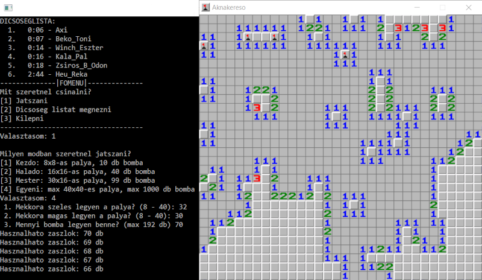A játék alapja a klasszikus Space Invaders, grafikus felülete SDL-lel készült. Feladatunk egy űrhajót jobbra-balra mozgatva eltalálni az összes közeledő űrlényt. Három nehézségi szint közül választhatunk, amelyek az ellenség sebességében térnek el. Az űrlényeket lelőve pontokat szerezhetünk, amivel felkerülhetünk a kiválasztott nehézségi szint ranglistájára is. A játék addig tart míg ki nem védtük mind a 15 támadási hullámot, vagy az űrlények el nem érték az űrhajónkat.
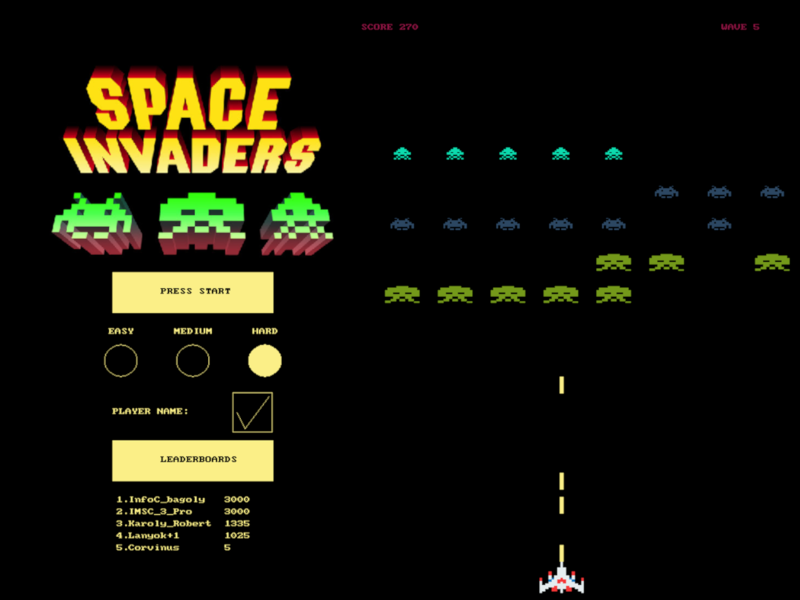Vitatott, hogy a kultikus videójáték sorozat, a Dark Souls által ihletett „souls-like” műfajnak van-e létjogosultsága, és ha igen, mik azok a sajátosságai, amik meghatározzák? Egy biztos: A souls-like játékok frusztrálóak, nehezek és igazságtalanok. Egyetlen apró hiba is végzetes lehet, de pont ezért hatalmas sikerélmény egy-egy győzelem. És melyik játékra is illene jobban ez a leírás, mint az aknakeresőre? Nagy házim, a Minesweeper Souls a klasszikus aknakereső játékot és a Dark Souls felhasználói felületét ötvözi egyetlen kegyetlen élménnyé, ami rage quittelésre készteti a casul gamereket.
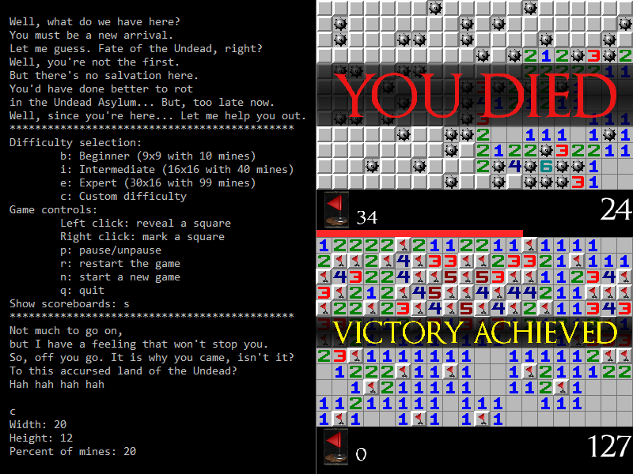A játék célja, hogy a holdkomppal minél kevesebb üzemanyag elhasználásával sikeresen leszálljunk a pálya vízszintes részére. A jobbra és balra nyilak lenyomásával az elfordulást, a felfelé nyíllal pedig a hajtómű ki-be kapcsolását tudjuk szabályozni. Ha sikeresen landolunk, felhasználónév megadása után felkerülünk a dicsőséglistára.
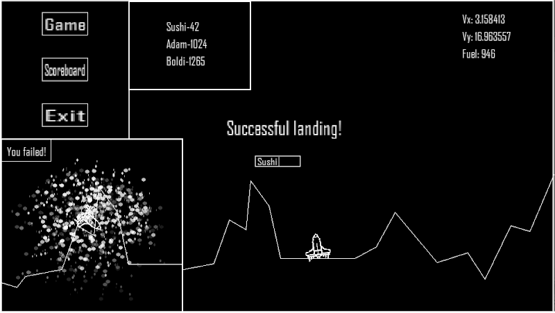A Stardew Mini a fantasztikus Stardew Valley áltál inspirált kis farmolós játék. Lehet a gazdával sétálgatni, ültetgetni és locsolni, idővel pedig learatni a terményt. Vásárolni is lehet magokat a házhoz sétálva. A játéknak nincs különösebb vége, bármikor el lehet menteni és visszalépni, alapból három mentést tud kezelni.
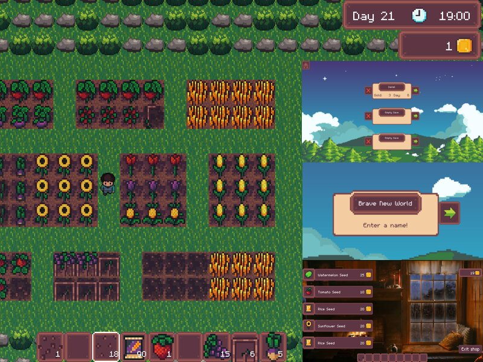A program a sakk hagyományos lépéseit követve két játékos számára biztosít játéklehetőséget a anélkül, hogy egyesével kéne felpakolgatni a bábukat a táblára mielőtt elkezdődik a játék. A felhasználók az éppen soron lévő szín bábujára kattintva szemügyre vehetik a bábuval tehető szabályos ütések és lépések lehetőségeit. A játék egyébként a sakkhoz híven a mattadással ér véget. Bármikor újra lehet indítani a játékot vagy éppen el lehet menteni az aktuális állást, illetve a legutolsó mentést vissza lehet tölteni. A program kifejezettem jól használható sakkmeccsek alapos kielemzéséhez.
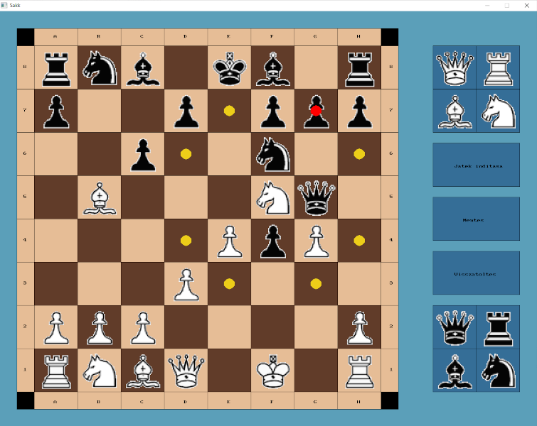A programom egy bolygórendszert szimuláló, SDL alapú, játékszerű applikáció. Futtatás után egy főmenübe kerülünk, ahol tudunk választani előre beállított pályák közül, vagy be tudunk tölteni egyedi pályákat is. A sandbox üzemmódban a gravitációs erők alapján számítja ki a program egy adott bolygórendszer mozgását. Állítható a szimuláció sebessége, hozzáadhatóak, illetve eltávolíthatóak objektumok, és menthető a pálya jelenlegi állapota. Szimulálni igazábol bármit lehet benne, de a körbe araszoló bolygók nem sokáig izgalmasak, így a legérdekesebb része a programnak az, amikor kaotikus rendszereket hoz létre az ember, és azt figyeli, hogy mi hogyan mozog, ütközik, stb.
A nagyházim a közismert amőba játékot valósítja meg SDL grafikával. A játékban tetszőleges méretű pályán tudunk játszani embertársunk vagy a gép ellen. A játék folyamán bármikor elmenthetjük az állást, amit később lehetőségünk van visszatölteni és folytatni. A gép játéka meglepően jó, több védekezési és támadási stratégiát is alkalmaz, és így a családtagjaim fölött is jó pár sikert ér el.
A játék a már klasszikussá vált Space Invaders játékmenetét valósítja meg SDL2 grafikai könyvtár segítségével. A cél minél több űrlényt lelőni, és minél tovább túlélni. A játék végtelenített menetet követ, vagyis minden egyes hullám után újabb űrlények érkeznek, melyek már gyorsabban lőnék és gyorsabban mozognak. A játék véget ér, ha a játékost háromszor eltalálja bármilyen űrlénytől származó lövedék, illetve, ha valamelyik űrlény eléri a játékos vízszintes vonalát. A játék vége után a játékos felkerülhet a dicsőséglistára.
Az ötletet 3Blue1Brown videója adta, és őszintén kiváncsi voltam, hogy tudok-e valami hasonlót készíteni. Ebben egyszerre 3 szimuláció képes egymástól függetlenül futni. Be tudjuk állítani a népesség méretét, a vírus terjedésének sugarát, a fertőzés esélyét és a fertőzöttség idejét. Legbüszkébb a grafikon kirajzolására vagyok. A képen nem látszik, de SVG fájlba is ki lehet exportálni a lefutott szimulációt reprezentáló grafikont. GitHub: https://github.com/steflergabor/virus-szimulator.
A program a klasszikus aknakeresőt kívánja megvalósítani SDL-ben. Három beépített nehézségi szintet és egyéni módot tartalmaz. A játék során lehetőségünk van újrakezdésre és mentésre, illetve később az elmentett állás betöltésére. A nyertes játékok után, a leggyorsabb játékosoknak lehetőségük van felkerülni a szintek szerint nyilvántartott dicsőséglistára.
A választott házim az a jól megszokott kígyós játék, amit talán mindenki ismer. A program egy SDL ablakban jeleníti meg a játékot. Egy kétdimenziós pályán kell almákat összeszedni egy kígyóval, ami minden alma megevése után megnő egy egységgel. Ez egy viszonylag egyszerű NHF, de mégis szórakoztató és látványos.
Az ismert 80-as évekbeli alapjáték hangulata inspirálta a Pac-Man ezen verzióját. Az eredeti arcade játék hangeffektjei és animációi mellett saját ellenség-logika (random és játékosközpontú irányválasztás kombinációja) és egy dinamikus ranglista kapott benne helyet. Erre pedig egy jól sikerült kör után saját névvel Te is felkerülhetsz!
Az általam készített házifeladat a Moon Lander nevű játék. A Játék megjelenítését az SDL2 grafikus könyvtár segítségével valósítottam meg. A több, mint 50 éves játékkoncepciót számtalan verzióban készítették el, az enyém leginkább az 1990-es, Windows 3.1-re készült variációt idézi. A játékos feladata egyszerű: A lehető legtöbb megmaradt üzemanyaggal szálljon le biztonságosan a sík területen, hogy aztán viszont lássa a nevét a dicsőséglistán.
A híres Pac-man játékot valósítottam meg. Egy labirintusszerű pályán a játékos nyilakkal irányíthatja karakterét, miközben négy szellem próbálja elkapni. Játék vége után a felhasználó beírhatja a nevét, ami a pontszámával együtt elmentődik a dicsőséglistába. A dicsőséglista bármikor megtekinthető a menüből, ahol a legjobb nyolc játékos neve és pontszáma található meg.
A játék lényege felnyitni a térképen az összes cellát és megjelölni az összes aknát tartalmazót. Amennyiben viszont rosszul számolunk és aknára lépünk, vesztünk. A játék másodlagos célja, hogy ezt a feladatot minnél gyorsabban elvégezzük hiba nélkül. Az általam készített program teljes mértékben grafikus menüvel és játéktérrel rendelkezik, mely állapotgépként működik. A program a játék játszásán kívül az egyes menetek végkimenetük előtti elmentésére, valamint késöbbi azok folytatására is lehetőséget ad.
A Moon Lander programban a játékos feladata limitált üzemanyaggal generált, hegyes-dombos holdi terepekre leszállni űrhajójával. A játék nehézségét a limitált irányítási lehetőségek adják. Csak az űrhajó elfordulását és az űrhajó teteje felé mutató gyorsulását tudja irányítani a játékos. A program megvalósításához az SDL2 grafikus könyvtárt használtam.
A space invaders az egyik legelső/legikonikusabb videójáték, ami már az 1970-es években ellepte a játéktermeket. A programom ennek a játéknak egyféle megvalósítása. A szinteket teljesítve a játékos egyre gyorsabban mozgó, erősebb űrlények ellen harcol, ami nehezíti és élvezhetőbbé teszi a játékélményt.
Klasszikus Tetris programot készítettem. A pálya szélessége és magassága változtatható a megadott értékek között. A grafikát SDL könyvtárral valósítottam meg. A játék vezeti a pontszámrekordot és a játszott játékidőt. Nyelvet is lehet váltani (angol-magyar). A játék színösszeállítása is változtatható. A játékosnak van lehetősége félretenni blokkot és láthatja a következő blokkokat is. A szint növekedésével nehezedik a játék.
A választott aknakereső játékom egy saját külsővel, de az eredeti windows-os játékmechanikával rendelkezik. Vannak alap nehézségi szintek és beállítható egyedi pályaméret és bombaszám. A játékot lehet menteni és visszatölteni, továbbá a legjobb időket is vissza lehet nézni. A programban található egy tutorial, ahol lépésről lépésre el van magyarázva a játék. Lehetőség van angol, magyar és spanyol nyelvek közül választani.
Ebben a játékban a játékos egy robotot irányít és az a célja, hogy a legkevesebb lépés alatt tolja be a veszélyes hulladékot a piros X-el jelölt helyekre. Minden pálya teljesítésénél fel kerülhet a játékos annak a dicsőség listájára. A játékban 20 különböző pálya teljesíthető, mellyeknek a nehézsége változó.
A programba regisztrálhatunk, ha már korábban regisztráltunk beléphetünk a fiókunkba. A belépés után megtekinthetjük a profilunkat, kereshetünk a felhasználók között több szempont szerint. Küldhetünk üzeneteket az ismerőseinknek, kilistázhatjuk a kimenő és bejövő üzeneteinket. Jelölhetünk be ismerősnek más felhasználókat, és kilistázhatjuk az ismerőseink ismerőseit. Kirajzoltathatjuk a szomszédsági gráfot az összes felhasználó között, a felhasználók monogramjaival jelölve, a képen ezt látjuk. Az éppen bejelentkezett fiók külön van jelölve. (A jobb oldali TK monogramú felhasználó az ún. admin, neki mindenki ismerőse lesz, ha regisztrál.)
Ebben a programban a Tetris alapjait valósítottam meg SDL-lel, mely egy 20 egység magas, és 10 egység széles pályán játszódik (standard). A menüben a játék szélessége állítható 6-tól 20 egységig. Ha egy sor betelik, akkor pontot kapsz rá, és eltűnik. Bizonyos időközönként szintet lépsz, és gyorsabban esnek az alakzatok. Az alakzatok színe és formája úgy van összepárosítva, mint az eredeti Tetrisben, tehát minden formához egy szín tartozik. A játék indítása előtt bekér egy nevet, és a játék közben bal oldalt írja ki a pontodat, hányadik szinten tartasz. Játék után elmenti egy fájlba az eredményed, és minden játék kezdése előtt kiírja balra a legmagasabb pontszámmal rendelkező nevet, a ponttal együtt.
A program Magyarországon grafilogiként, helyenként Nonogram néven elhíresült játékot valósítja meg SDL2 grafikai könyvtár segítségével. Grafilogika egy olyan logikai rejtvény, aminek megfejtésével egy kép tárul elénk. A táblázat mellett bal oldalon és felül elhelyezkedő, segítségeket találunk számok formájában, amelyek megmutatják, hogy az adott sorban vagy oszlopban mekkora besatírozott cellablokkok követik egymást, minimum egy üres mező közbeiktatásával. A játék a beállított nehézségi szintnek megfelelően véletlenszerűen választ ki egy feladványt és jelenít meg, amit a felhasználónak lehetősége van elmentenie és később visszatöltenie.
Én a sokak által ismert Snake játékot készítettem el az SDL grafikus könyvtár segítségével. A programomban vagy egyjátékos és többjátékos mód is. Egyjátékos módban ki lehet választani a kígyó színét, valamint a kétféle játékmódból az egyiket: szabad mód (amikor a játékos kimehet a pályáról a kígyóval, és a másik oldalon visszatér), valamint fal mód (a pályát fal veszi körül, a játénknak vége, ha a kígyó a falnak ütközik). A cél az, hogy minél több pontot szerezzünk, és ezáltal felkerüljünk a ranglistára, ami a legjobb öt játékos nevét és pontszámát tartalmazza. Többjátékos módban a két kígyó egymással versenyzik, az nyer, aki több pontot tud összegyűjteni, anélkül, hogy nekimenjen a másik kígyónak, vagy saját magának.
A feladat nagyon egyszerű, egy véletlenül generált pálya felszínén kell landolni a sík terepre. Egyjátékos mód van a játékban, viszont elérhető egy dicsőséglista, amely tökéletesen alkalmas a barátokkal való versenyzésre. Gyorsnak és pontosnak kell lenni, ugyanis az idő múlásával fogy az üzemanyag a hajóból. Ha az üzemanyagtartály üres, akkor egy profi pilóta sem fog landolni biztonságosan. Fontos szempont a játék menete során, hogy túlságosan nagy oldalirányú és függőleges sebesség esetén az űrhajó összetörik és a landolás sikertelen.
A nagy házim egy szokványos kígyós játék. A cél minél több alma megevése a kígyóval, ezzel növelve a pontszámot és a kígyó méretét. Egy- és kétjátékos mód is van benne. Az egyjátékos módban a a legmagasabb pontszám megdöntésével lehet nyerni, a kétjátékosban pedig a magasabb pontszám elérésével, vagy az ütközés elkerülésével. A program minden játék után menti a legmagasabb pontszámot, ha sikerült megdönteni. A játéknézeten kívül van főmenü és játék vége képernyő is.
Az általam választott feladat a klasszikus Bomberman játék alapkoncepciójának utánzása volt: Egy véletlenszerűen generált pályán ellenségek közepette találod magad. Két eszközöd van: bomba és az ügyesség. Feladatunk, hogy mindegyik ellenséget felrobbantsuk, illetve megtaláljuk a kijáratot, az egyik elpusztítható doboz alatt. De vigyázat! Ha túl közel állsz a bombához, könnyen a martalékává válhatsz. Kis segítség, hogy van quick save opció, azonban újratöltéskor nem születsz ugyanoda.
GitHub: https://github.com/asztrikx/bomberman.
Textúrák: https://opengameart.org/ + saját átdolgozás
A programom egy gonosz akasztófa játék, ami abban különbözik a sima akasztófa játéktól, hogy a gép nem kötelezi el magát egyetlen szó mellett sem. Ehelyett a játékos tippjei alapján számolja ki a gép számára legkedvezőbb (és a játékos számára kedvezőtlen) esetet. A játék indításánál a Unix-szerű rendszereken megszokott kapcsolókkal lehet megváltoztatni az életek számát, a kitalálandó szó hosszúságát és a használandó szótárfájlt.
Ebben a játékban a felhasználó a Csapos szerepét tölti be. Szomjas vendégek özönlenek be az ajtón, igyekezni kell, hogy senki ne maradjon szomjas. Egy sör nélkül maradt vendég, egy életpontba kerül, ha az összes életpont elfogyott, véget ér a játék. Ekkor a felhasználó meg tudja adni a nevét, hogy felkerüljön a dicsőséglistára.
Az én házifeladatom egy aknakereső játék, SDL segítségével megjelenítve. A Windows XP-s verzióra hasonlít irányításában, játékmenetében és az előre megadott nehézségi szintjeiben (van lehetőség a pályaméret és aknaszám megadására is). A játékos rekordjait elmenti a program és jelzi, ha megdönti azokat.